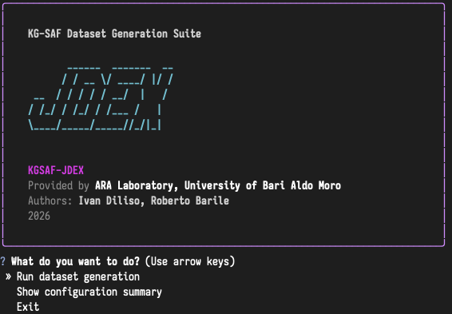

Tutorials and Guides
Running JDEX on Example Files
We provided in the tutorial_input folder a set of ontology schema schema.owl, and facts facts.owl (class and object property assertions) derived from DbPedia to show of our JDEX Suite. Be aware that we added an artificial unsatisfiable class to this schema, in order to show you how the tool can automatically recognize these and prompt you with the possibility of automatically filtering them form the knowledge base. A ready-to-use example configuration is available as configuration.json, in this all reaosning step are enabled, feel free to play around with configuration to understand all the possible JDEX generation possibilities!
Warning
Be aware that configuration.json need to be modified with your JAVA_8_HOME and JAVA_11_HOME paths! For this tutorial, Java 8 is not needed, since the ontology is consistent and no justification tool (Pellet) is needed!
Instructions
After installation, from the base folder run:
./run_jdex --config ./tutorials/tutorial_input/configuration.json
The JDEX banner will show, follow the CLI instruction to go forward!

Loading and Analyzing a KG-SaF Datasets in PyTorch
This tutorial demonstrates how to load a Knowledge Graph dataset using kgsaf_jdex and inspect its components, classes, and object property hierarchies. You can find a full executable Notebook in tutorials/torch_loader.ipynb. This example will be run on the tutorial dataset generated in previous phase (an already generated dataset is available)
Setup and Imports
Before loading the dataset, make sure your Python environment can access the library and required modules:
import sys
sys.path.append(str(Path.cwd().parent)) # Adds the parent folder to the path
import json
import random
from pathlib import Path
import kgsaf_jdex.utils.conventions.paths as pc
from kgsaf_jdex.loaders.pytorch.dataset import KnowledgeGraph
Loading the Dataset
Use the KnowledgeGraph class to load a dataset from the folder created by the unpacking utility:
cwd = Path.cwd().parent
kg = KnowledgeGraph(
path= cwd / "tutorials/tutorial_dataset"
)
Inspect Dataset Components
You can quickly inspect the shapes of the main dataset components:
print(f"{'Dataset Component':<35} | {'Shape'}")
print("-" * 50)
print(f"{'Training triples':<35} | {kg.train.shape}")
print(f"{'Test triples':<35} | {kg.test.shape}")
print(f"{'Validation triples':<35} | {kg.valid.shape}")
print(f"{'Class assertions':<35} | {kg.class_assertions.shape}")
print(f"{'Taxonomy (TBox)':<35} | {kg.taxonomy.shape}")
print(f"{'Object property hierarchy':<35} | {kg.obj_props_hierarchy.shape}")
print(f"{'Object property domains':<35} | {kg.obj_props_domain.shape}")
print(f"{'Object property ranges':<35} | {kg.obj_props_range.shape}")
Dataset Component | Shape
--------------------------------------------------
Training triples | torch.Size([22812, 3])
Test triples | torch.Size([2852, 3])
Validation triples | torch.Size([2852, 3])
Class assertions | torch.Size([171347, 2])
Taxonomy (TBox) | torch.Size([1942, 2])
Object property hierarchy | torch.Size([9, 2])
Object property domains | torch.Size([504, 2])
Object property ranges | torch.Size([665, 2])
Exploring Individuals Classes and Object Properties
You can select random elements for testing:
individual_uri_test = random.choice(list(kg._individual_to_id.keys()))
class_uri_test = random.choice(list(kg._class_to_id.keys()))
op_uri_test = random.choice(list(kg._obj_prop_to_id.keys()))
print(f"Testing on individual: {individual_uri_test}")
print(f"Testing on class: {class_uri_test}")
print(f"Testing on object property: {op_uri_test}")
Testing on individual: http://dbpedia.org/resource/Eduard_Zorn
Testing on class: http://dbpedia.org/ontology/Publisher
Testing on object property: http://dbpedia.org/ontology/frazioni
Inspecting Class Assertions
Retrieve all classes associated with an individual:
cls = kg.individual_classes(kg.individual_to_id(individual_uri_test)).tolist()
print(f"Class assertions for [{kg.individual_to_id(individual_uri_test)}] {individual_uri_test}:")
for c in cls:
print(f"\t[{c}] {kg.id_to_class(c)}")
Testing the Class Assertions of [5779] http://dbpedia.org/resource/Eduard_Zorn
Tensor [193, 297, 67, 119, 346, 251, 360, 372, 293, 140, 13]
[193] http://dbpedia.org/ontology/Species
[297] http://www.wikidata.org/entity/Q215627
[67] http://dbpedia.org/ontology/Eukaryote
[119] http://dbpedia.org/ontology/MilitaryPerson
[346] http://www.wikidata.org/entity/Q5
[251] http://schema.org/Person
[360] http://www.wikidata.org/entity/Q729
[372] http://xmlns.com/foaf/0.1/Person
[293] http://www.wikidata.org/entity/Q19088
[140] http://dbpedia.org/ontology/Person
[13] http://dbpedia.org/ontology/Animal
Exploring Class Hierarchies
Check superclasses and subclasses of a given class:
sup_cls = kg.sup_classes(kg.class_to_id(class_uri_test)).tolist()
sub_cls = kg.sub_classes(kg.class_to_id(class_uri_test)).tolist()
print("Superclasses:")
for c in sup_cls:
print(f"\t[{c}] {kg.id_to_class(c)}")
print("Subclasses:")
for c in sub_cls:
print(f"\t[{c}] {kg.id_to_class(c)}")
Testing the Hierarchy of [158] http://dbpedia.org/ontology/Publisher. Leaf class? True
Superclasses
Tensor: [51, 4, 305, 341, 332, 250, 137]
[51] http://dbpedia.org/ontology/Company
[4] http://dbpedia.org/ontology/Agent
[305] http://www.wikidata.org/entity/Q24229398
[341] http://www.wikidata.org/entity/Q4830453
[332] http://www.wikidata.org/entity/Q43229
[250] http://schema.org/Organization
[137] http://dbpedia.org/ontology/Organisation
Subclasses
Tensor: []
Note
is_leaf(class_id) can be used to check if the class is a leaf in the hierarchy.
Inspecting Object Properties Hierarchies
Check super and sub properties, as well as domains and ranges:
sup_op = kg.sup_obj_prop(kg.obj_prop_to_id(op_uri_test)).tolist()
sub_op = kg.sub_obj_prop(kg.obj_prop_to_id(op_uri_test)).tolist()
print("Super Object Properties:")
for c in sup_op:
print(f"\t[{c}] {kg.id_to_obj_prop(c)}")
print("Sub Object Properties:")
for c in sub_op:
print(f"\t[{c}] {kg.id_to_obj_prop(c)}")
domain = kg.obj_prop_domain(kg.obj_prop_to_id(op_uri_test)).tolist()
range = kg.obj_prop_range(kg.obj_prop_to_id(op_uri_test)).tolist()
print("Domain:")
for c in domain:
print(f"\t[{c}] {kg.id_to_class(c)}")
print("Range:")
for c in range:
print(f"\t[{c}] {kg.id_to_class(c)}")
Testing the Role Hierarhcy of [102] http://dbpedia.org/ontology/genre
Super Obj Prop
Tensor: []
Sub Obj Prop
Tensor: [138]
[138] http://dbpedia.org/ontology/literaryGenre
Testing the Role Hierarhcy of [102] http://dbpedia.org/ontology/genre
Domain
Tensor: [-1]
[-1] http://schema.org/Thing
Range
Tensor: [79]
[79] http://dbpedia.org/ontology/Genre
Running TransE on KG-SaF Datasets
This tutorial demonstrates how to train and evaluate TransE KGR model
on a dataset prepared with the jdex loaders. You can find a full executable Notebook in tutorial/pykeen_training.ipynb. The example will use the tutorial dataset.
Imports
This code imports all necessary packages, including PyKEEN for knowledge graph embeddings and your kgsaf_jdex dataset utilities.
import sys
from pathlib import Path
import json
from pykeen.triples import TriplesFactory
from pykeen.evaluation import RankBasedEvaluator
from pykeen.pipeline import pipeline
import kgsaf_jdex.utils.conventions.paths as pc
# Add parent folder to Python path if needed
sys.path.append(str(Path.cwd().parent))
Loading and Mapping Triples
Here we load entity and relation mappings from JSON files, and then build TriplesFactory objects for training, validation, and testing. PyKEEN uses these to manage KG data efficiently.
cwd = Path.cwd().parent
dataset_path = cwd / "tutorials/tutorial_dataset"
# Load entity and relation mappings
with open(dataset_path / pc.INDIVIDUAL_MAPPINGS, "r") as f:
entity_mapping = json.load(f)
with open(dataset_path / pc.OBJ_PROP_MAPPINGS, "r") as f:
relation_mapping = json.load(f)
# Create PyKEEN TriplesFactory objects
train_tf = TriplesFactory.from_path(
dataset_path / pc.TRAIN,
entity_to_id=entity_mapping,
relation_to_id=relation_mapping,
)
valid_tf = TriplesFactory.from_path(
dataset_path / pc.VALID,
entity_to_id=entity_mapping,
relation_to_id=relation_mapping,
)
test_tf = TriplesFactory.from_path(
dataset_path / pc.TEST,
entity_to_id=entity_mapping,
relation_to_id=relation_mapping,
)
Train TransE Model
This code trains a TransE model using the dataset we just loaded. The pipeline function handles everything: model initialization, training, validation, and testing.
result = pipeline(
model="TransE",
training=train_tf,
validation=valid_tf,
testing=test_tf,
model_kwargs=dict(embedding_dim=100),
training_kwargs=dict(num_epochs=25, batch_size=128),
device="cpu"
)
INFO:pykeen.pipeline.api:Using device: cpu
INFO:pykeen.nn.representation:Inferred unique=False for Embedding()
INFO:pykeen.nn.representation:Inferred unique=False for Embedding()
Training epochs on cpu: 100% 5/5 [00:30<00:00, 6.71s/epoch, loss=0.141, prev_loss=0.182]
Evaluating on cpu: 100% 7.70k/7.70k [01:09<00:00, 109triple/s]
INFO:pykeen.evaluation.evaluator:Evaluation took 69.78s seconds
Note
You can replace "TransE" with any other PyKEEN model, e.g., "DistMult", "ComplEx", etc.
embedding_dim, num_epochs, and batch_size can be adjusted depending on your dataset size.
Evaluation
This code evaluates the trained model using filtered ranking metrics, such as MRR and Hits@K. Filtered evaluation ignores triples already seen in training/validation to avoid penalizing correct predictions.
evaluator = RankBasedEvaluator(filtered=True)
results = evaluator.evaluate(
model=result.model,
mapped_triples=test_tf.mapped_triples,
additional_filter_triples=[
train_tf.mapped_triples,
valid_tf.mapped_triples,
],
)
results.to_dict()
Evaluating on cpu: 100% 7.70k/7.70k [01:19<00:00, 86.9triple/s]
INFO:pykeen.evaluation.evaluator:Evaluation took 79.32s seconds